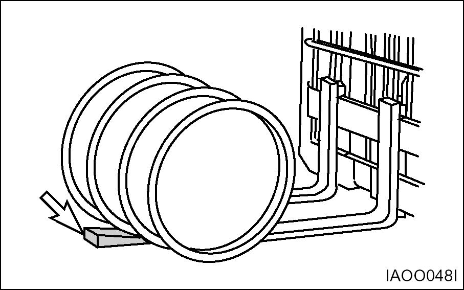
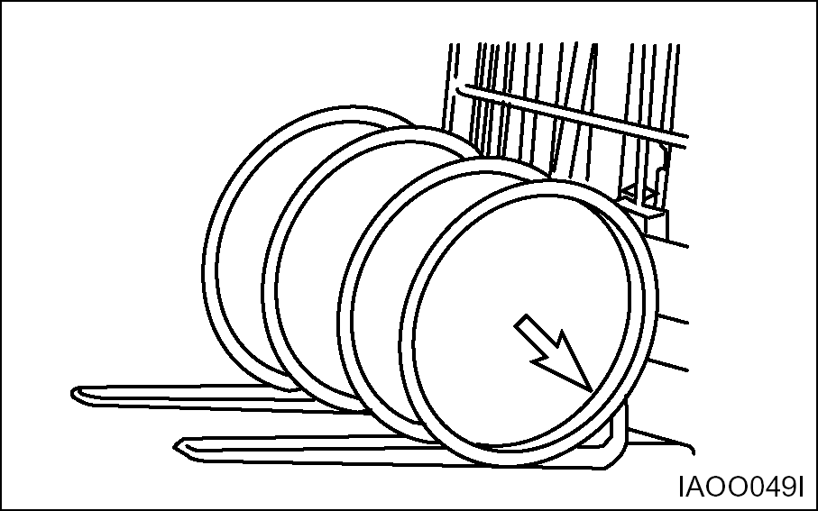

Lifting Drums or Round Objects  Block drums or round objects. Tilt the mast FORWARD and side the fork tips along the floor to get under the load.  Before lifting, tilt the mast BACK slightly until the load is cradled on the forks.